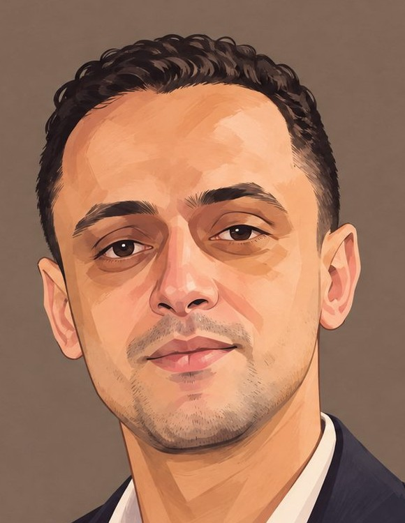

About me
Marketing consultant, ten years in the market.
I am a marketing consultant with ten years of experience in the Egyptian, European and Gulf markets. My work spans advertising campaigns, social media, SEO, brand identity, performance marketing, and web development.
How I work
Growth isn't one-size-fits-all. I listen first, to your vision, your goals, your market, then I build a tailored strategy across online and offline channels to turn that vision into measurable growth. I don't sell packages. I build pathways: you set the destination, and I make the numbers talk.
Core values
Fusion
I believe in the power of synergy: collaboration creates results greater than the sum of its parts.
Dynamic
I adapt fast and stay forward-thinking, so the work keeps driving lasting success.
Honor
I commit to integrity, accountability, and doing what's right in every relationship.
Sectors
15 sectors served
Footprint